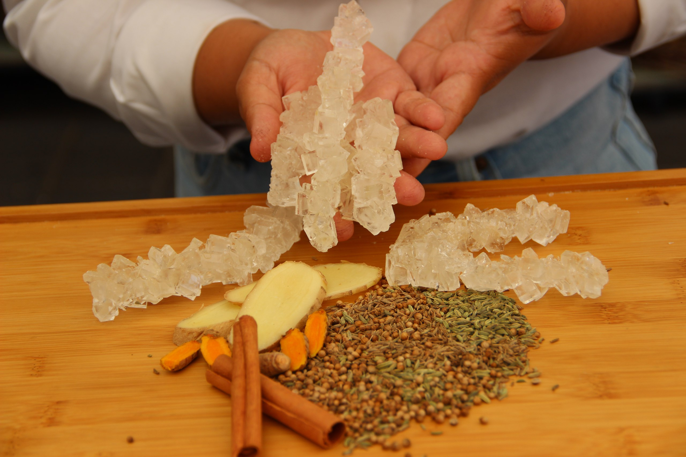

סדנאות בישול ואורח חיים וודי

להתייעצות והרשמה לסדנה
סדנת בישול איורוודי למתחילים
בואו ללמוד איך להפוך את המטבח שלכם לבית מרקחת טבעי. בסדנה נכיר את התבלינים המחממים והמקררים, נלמד להכין גהי (חמאה מזוקקת) ונתנסה בבישול מנות Sattvic מזינות וטעימות שמתאימות לכל המשפחה.
מה לומדים בסדנה?
- • עקרונות התזונה לפי ה-Dosha שלך
- • שימוש נכון בתבלינים לשיפור העיכול
- • הכנת מנות בסיס איורוודיות
- • סודות התסיסה והפרוביוטיקה הביתית